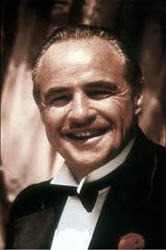
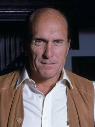

Marlon Brando
Personagem: Don Vito Corleone
O patriarca da família Corleone, conhecido pela sua voz calma e pelo seu poder inabalável. Uma das interpretações mais icónicas da história do cinema, que valeu a Brando o Óscar de Melhor Ator.

Al Pacino
Personagem: Michael Corleone
O filho mais novo de Don Vito, inicialmente afastado do mundo do crime, mas que acaba por se transformar num líder frio e calculista.

Robert Duvall
Personagem: Tom Hagen
O consigliere da família Corleone,Tom é uma personagem calma que tenta manter o equilíbrio entre o mundo dos negócios e da máfia.
Diane Keaton
Personagem: Kay Adams
A esposa de Michael Corleone, uma mulher que luta entre o amor e o medo pelo homem em que o marido se transforma.